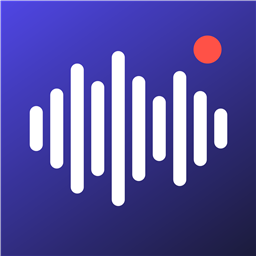
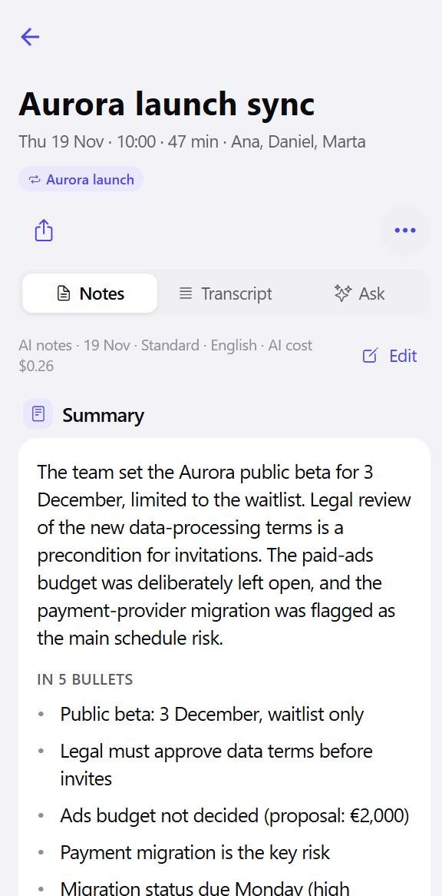

Record anywhere
One big button, bookmarks for key moments, and recording that carries on with the screen locked. Import existing audio too.

MinuteFlow turns the iPhone you already own into a meeting assistant: a transcript that knows who said what, clear notes, decisions and action items, in seven languages. Nothing leaves your phone unless you say so.

Notes for a demo meeting with fictional data.
From one tap on Record to notes you can check and share.
One big button, bookmarks for key moments, and recording that carries on with the screen locked. Import existing audio too.
A transcript split by speaker, with word-level timing. Name the speakers once and every note updates.
Summary, decisions, actions with owner and deadline, open questions and risks. Each point links to the moment it was said.
"What did Daniel say about the deadline?" Answers for one meeting or all of them, with the quotes to prove it.
Every action item from every meeting on one screen, with what is yours, what is overdue and optional reminders.
Choose the transcript, notes or audio, review, then send with the Share Sheet or to your own Google Drive. Nothing is shared automatically.
Google Drive is optional. If you connect it, MinuteFlow uses access to only the files it creates, to save the transcripts, notes and recordings you choose to upload. Files are private to you unless you add people. Notes and transcripts come from Google's Gemini AI and can contain mistakes; MinuteFlow flags anything it could not verify. See the privacy policy.
Anything else? Write to aissa.b.code@gmail.com. We read every message.